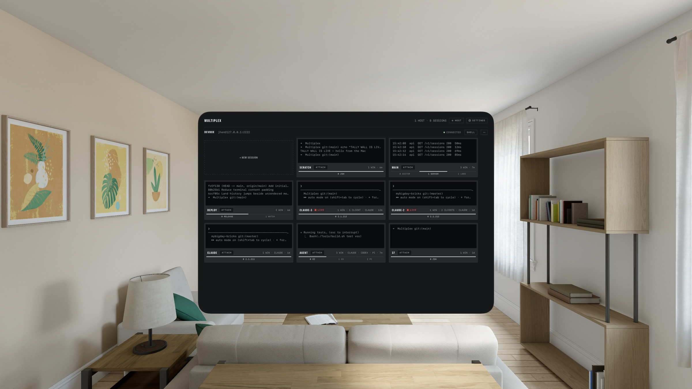

Multiplex
Your hosts probe over SSH and every tmux session hangs as a live monitor: its actual last lines, a spine segment per window, and a red tally while you are attached. Tap one and it opens in its own window.
Reading the wall
ONE TILE = ONE TMUX SESSIONThe session's actual last lines, streamed about every five seconds while the wall is in front of you. Not an icon. Not a name in a list.
The broadcast "on air" lamp. Lit and captioned LIVE while you are attached; detached sessions carry a neutral ATTACH badge instead.
One segment per tmux window, the active one lit, split panes counted. A whole session's shape, readable across the room.
Bell or activity in a window flags its segment in caution amber. Agents report here too: the wall shows CLAUDE, CODEX, or PI in a tile's telemetry.
An unreachable host is a hatched NO SIGNAL tile with a RECONNECT badge. Failure is part of the composition, never a blank page.
Capabilities
VISIONOS 1.0 / IOS 17Attach opens each session in its own window: spatial placement on Vision Pro, real scenes in Stage Manager and Split View on iPad. Merge windows into tabs and split them back out; the connection, buffer, and scrollback move with the tab.
Claude Code, Codex, and Pi detected in every pane, on the wall and in the terminal. Command chips follow the foreground agent; custom commands sync per host. Alerts on finished turns, questions, and permission promptsPRO, plus Claude Code prompt history with jump-back-to-messagePRO.
SSH with password or OpenSSH ed25519 and RSA keys, secrets in the Keychain. A native mosh clientPRO keeps sessions alive through sleep, roaming, and IP changes; no companion app on the host side beyond mosh-server.
Drag a file onto the terminal, or attach from Files, Photos, or the iPad camera. Multiplex uploads it over the tab's own connection into the pane's working directory and types the remote path without submitting it.
Full xterm-256color with touch and pointer clicks for mouse-aware TUIs. Multilingual system keyboards and IMEs, hardware keyboards, live PTY resize, a tmux shortcut menu, and touch-native copy mode. Ten built-in themes, one selection per appearance; a custom theme editor with Pro.
Home Screen widgets show last-known session frames with an honest SEEN stamp. Siri and Shortcuts open a shell or launch an agent with a first prompt; a multiplex:// scheme drives your own automations.
No account, no analytics, no servers of ours. Hosts, secrets, and command setups sync device to device through end-to-end encrypted iCloud Keychain. Bytes travel from your device to your host, and nowhere else.

The deck on Apple Vision Pro. Host devbox, eight sessions, two attached.
Rate card
ONE PURCHASE / NO SUBSCRIPTION- Two hosts, the full spatial experience
- Live wall, windows, tabs, merge and split
- Agent detection everywhere, ten command-chip taps a day
- File drops, widgets, Shortcuts, Keychain sync
- Built-in themes, light and dark appearance
- Unlimited hosts
- mosh: sessions survive sleep, roaming, IP changes
- Unmetered agent chips, alerts when a session needs you
- Claude Code prompt history with jump-back-to-message
- Custom theme editor, on all your devices
You need a host you can reach over SSH. The live wall and persistent sessions need tmux 1.8+; plain SSH shells work without tmux; mosh needs mosh-server on the host. Works with any POSIX login shell.